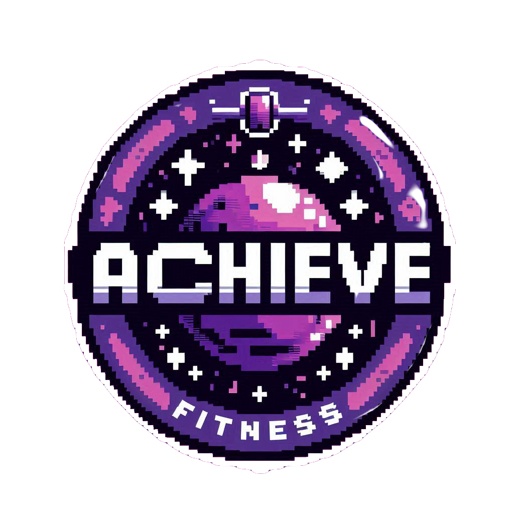
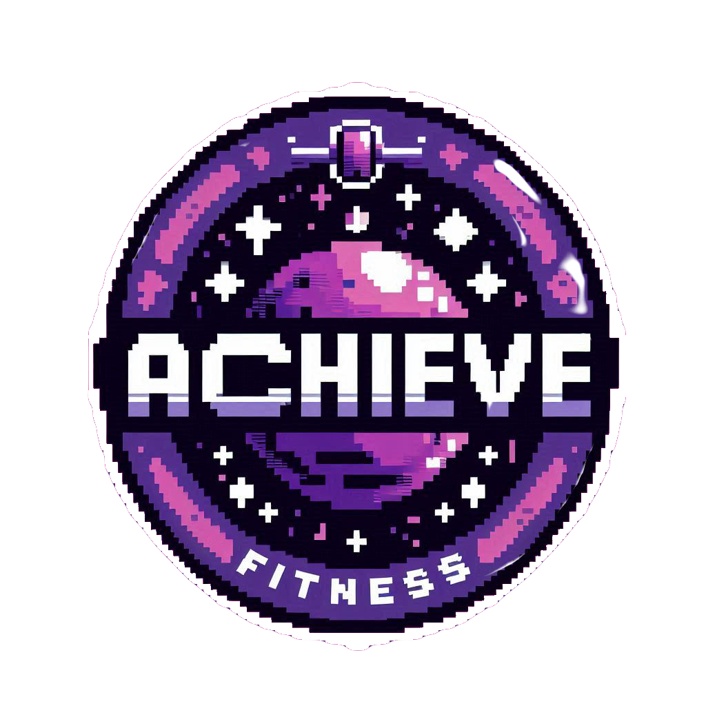

Vending Machine
Small Victory Soda
Nutrition Facts: Celebrate the small victories, for they are the building blocks of success. Each step forward, no matter how minor, deserves recognition. These moments of progress boost our motivation and reinforce our commitment to our goals. Whether it's completing a task, learning something new, or simply making it through a challenging day, each achievement counts. By acknowledging these small wins, we cultivate a positive mindset, fueling our drive to take on larger challenges ahead. Remember, success is not just measured by grand achievements, but also by the cumulative effect of all the little victories along the way."
Can't Stop Winning Cola
Nutrition Facts: "Every time you fail, you win. You gain valuable insights that lead to growth and improvement. Each setback is an opportunity to learn, adapt, and strengthen your resolve. Embracing failure teaches resilience, reminding us that success is not just about avoiding mistakes but about how we rise from them. With every stumble, you acquire wisdom, refining your path toward your goals. So, celebrate your failures as stepping stones on the journey to greatness.
Schedule
2 sets 10 reps of cheering for yourself
3 sets 12 reps of making progress
3 sets 12 reps of slow progress is better than no progress
2 sets 10 reps of doing tricks you're good at